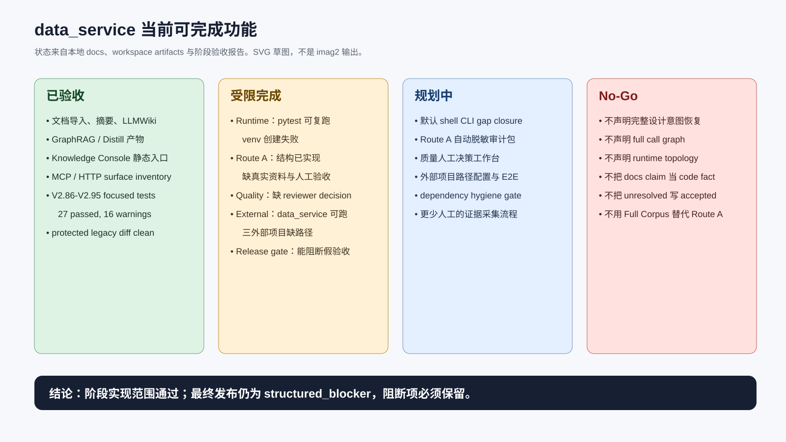
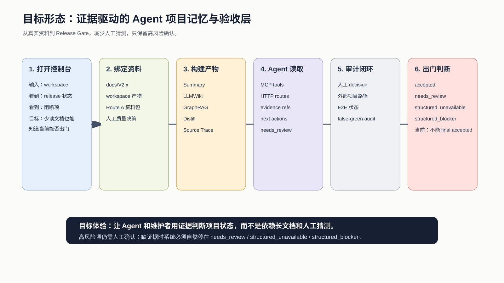
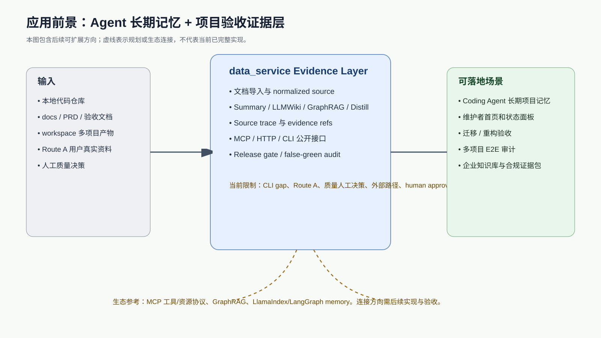

1. 一句话定位
data_service 当前更接近“证据驱动的项目知识层与验收门禁层”：它能把文档、工作区产物、MCP/HTTP surface、测试结果和 release gate 状态组织成 Agent 可读的长期上下文，但仍不能替代高风险人工确认。
自动化范围
通过
V2.86-V2.95 focused tests 与 public surface guard 通过。
人工依赖
存在
Route A、质量决策、human approval 仍需真实证据。
最终出门
阻断
final release gate 当前为 structured_blocker。
展示图状态
待 imag2
终端未发现 imag2，本页图为 SVG 草图。
2. 当前可完成功能分类

| 分类 | 能力 | 当前判断 |
|---|---|---|
| 已验收 | 文档导入、摘要、LLMWiki、GraphRAG/Distill 产物、Knowledge Console 静态入口、MCP/HTTP inventory、focused tests、protected legacy diff | 有本地测试和 artifact 证据支撑。 |
| 受限完成 | runtime restore、Route A、质量决策、外部项目 E2E、release gate | 代码结构与报告能力存在，但真实资料、人工决策或外部路径不足。 |
| 规划中 | 默认 shell CLI gap、Route A 自动化脱敏、质量人工决策工作台、外部项目路径治理、dependency hygiene | 适合作为下一阶段候选目标。 |
| No-Go | 完整设计意图恢复、full call graph、runtime topology、data/control flow、type inference、把 unresolved 写 accepted | 明确禁止，防止 false-green。 |
3. 目标形态与使用路径

维护者路径
- 打开 Knowledge Console 或 HTML 审查报告。
- 查看 runtime、Route A、Quality、External Project、Release Gate 状态。
- 只在高风险缺口处补真实资料、人工决策或路径。
- 复跑验收命令，确认 false-green audit 未放行阻断项。
Agent 路径
- 通过 MCP/HTTP 读取 persisted artifacts。
- 把 evidence_refs、unresolved、next_actions 作为上下文。
- 避免把文档 claim 当代码事实。
- 在缺证据时保持 needs_review 或 structured_unavailable。
4. 应用前景

结合本地文档和外部官方/开源资料，data_service 的合理落地方向是：把本地项目资料构造成可追溯、可审计、可由 Agent 调用的证据层，而不是直接承诺“理解完整系统”。
- MCP 对接方向：当前项目已有 MCP tool surface；MCP 官方资料把工具、资源等作为模型可交互上下文接口，适合承接 Agent 调用。
- GraphRAG 方向：Microsoft GraphRAG 开源方案说明了图增强检索的生态路线；data_service 已有 GraphRAG 类产物，但不能声明完全等价。
- Agent memory 方向：LlamaIndex 与 LangGraph 均有 memory 相关官方文档；data_service 可以作为项目级长期记忆后端候选，但需要补稳定 API、权限、清理和增量更新能力。
- 企业审计方向：当前 release gate、false-green audit、source trace 和状态枚举可发展为迁移/重构/合规验收证据包。
5. 本地证据索引
| 证据 | 路径 | 说明 |
|---|---|---|
| 阶段审计报告 | docs/V2.x/V2_91_95_REAL_ACCEPTANCE_CLOSURE_AND_RESTORE_ENVIRONMENT_STAGE_ACCEPTANCE_AUDIT_REPORT.md | 说明实现范围通过，但 final release 未 accepted。 |
| 最终可视化审查报告 | docs/V2.x/V2_91_95_REAL_ACCEPTANCE_CLOSURE_AND_RESTORE_ENVIRONMENT_VISUAL_ACCEPTANCE_REPORT.html | 包含截图证据、复现命令和阻断语义。 |
| Release gate artifact | workspace/v2_91_95_real_acceptance_e2e/assets/codebase/data_service_v29195/real_acceptance_closure/release_finalizer/final_gate_summary.json | 当前 status 为 structured_blocker。 |
| Workspace 项目样本 | workspace/data_service_docs_demo、workspace/v2_86_90_manual_experience、workspace/v2_91_95_real_acceptance_e2e | 用于本地多项目/多阶段理解与验收。 |
6. imag2 生图状态
未完成 imag2 出图。 本机未发现 imag2 命令，`gpt-image-2` 技能检测为 B/C 模式且无本地 API key。因此本页内三张图是可审计 SVG 草图，不是 AI 生图产物，不能当作“已按 imag2 生成”的证据。
已落盘可直接交给宿主 imag2 的提示词：
docs/present/imag2_prompts/01_current_capability_map.mddocs/present/imag2_prompts/02_target_experience_storyboard.mddocs/present/imag2_prompts/03_application_outlook.md
7. 外部资料来源
以下只支撑应用前景，不作为当前代码实现证据。
8. 给其它 Agent / ChatBox 的快速结论
data_service 可以作为证据驱动的项目知识层、Agent 长期上下文候选和验收门禁层继续演进。
当前自动化实现范围通过，但 final release 未 accepted。
不要声明完整设计意图恢复、full call graph、runtime topology、data/control flow 或 type inference。
不要把 needs_review / structured_unavailable / structured_blocker 写成 accepted。
下一步优先补：imag2 出图环境、默认 shell CLI gap、Route A 真实资料、质量人工决策、外部项目路径、dependency hygiene、human approval。